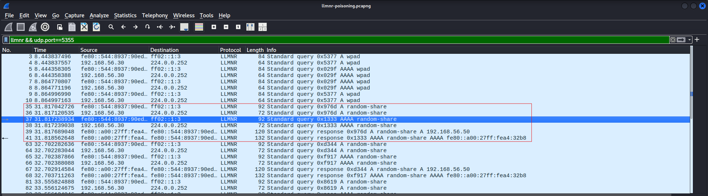
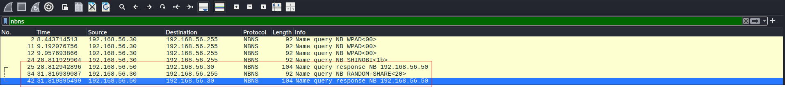
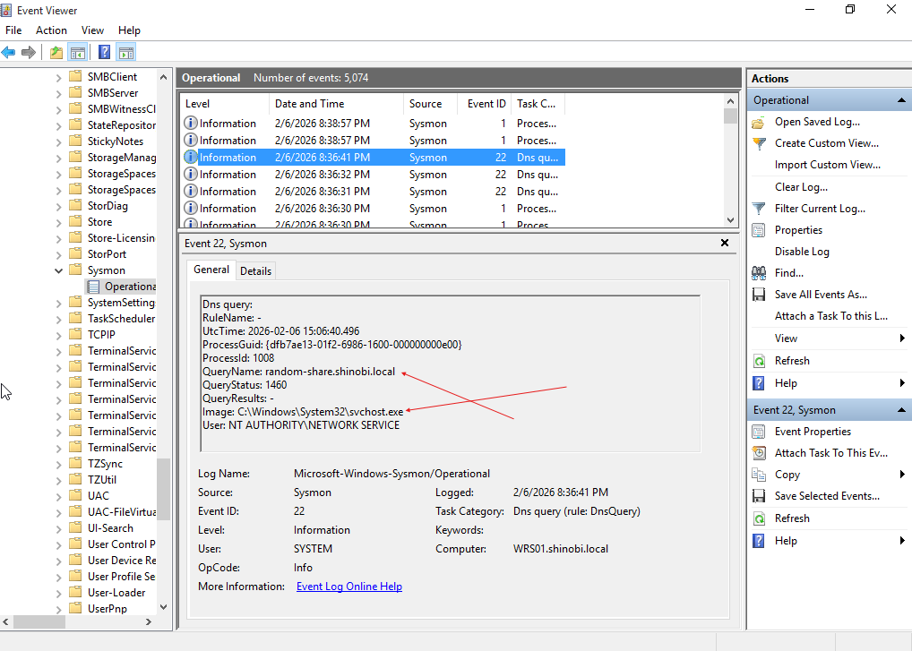

Detection Strategy: LLMNR/NBT-NS Poisoning
Detection of LLMNR/NBT-NS poisoning relies on identifying abnormal broadcast traffic patterns and unauthorized responses to name resolution queries. Since valid LLMNR traffic is common in Windows environments, analysts must focus on responses to non-existent hosts and subsequent authentication attempts.
Phase A: Detecting the Poisoned Response
In a healthy network, a query for a non-existent host (e.g., random-share) should go unanswered or receive a "Name Error." During an attack, the adversary machine actively sends a "Standard Query Response" claiming to be that host.
llmnr && udp.port==5355 or nbns192.168.56.50) sends a spoofed response to the victim (192.168.56.30), claiming to be the requested resource random-share.
Phase B: Identifying NBT-NS Spoofing
Similar to LLMNR, the attacker exploits NetBIOS Name Service. The capture shows the attacker responding to a Name Query for RANDOM-SHARE<20>. The <20> indicates a request for the File Server service, confirming the victim is trying to access a file share.

Correlating SMB Session Setup
Once the victim accepts the spoofed IP, they attempt to authenticate. This generates SMBv2 traffic. The critical indicator is the Session Setup Request where the NTLMSSP_AUTH flow occurs. This confirms that the victim machine (WRS01) has initiated a login attempt against the attacker.
ntlmsspgojo_satoru69 sending their NetNTLMv2 hash (Challenge/Response) to the attacker.Deep Dive: The NTLMv2 Hash
Deep packet inspection reveals the actual NTLMv2 Response and NTProofStr. In a real incident, this unique challenge-response pair is what the attacker captures to perform offline cracking.
To recover the hash we need to dissect on of the ntlmssp sets.
Format :- User::Domain:ServerChallenge:NTProofStr:NTLMv2Response(without first 16 bytes/32 characters).
| Indicator Type | Artifact Value | Context |
|---|---|---|
| Attacker IP | 192.168.56.50 | Source of spoofed LLMNR/NBNS responses. |
| Victim Workstation | WRS01 (192.168.56.30) | Initiated the broadcast queries. |
| Compromised Account | gojo_satoru69 | Credentials exposed via NTLMv2 hash. |
| Targeted Resource | random-share | The non-existent hostname used to trigger the event. |
Source Network Address is an internal workstation, but the Workstation Name does not match the IP.ntoskrnl.exe or svchost.exe initiating SMB connections (Port 445) to non-standard internal IPs that are not known File Servers.
{kind=link}
{kind=link}
{kind=link}
{kind=link}